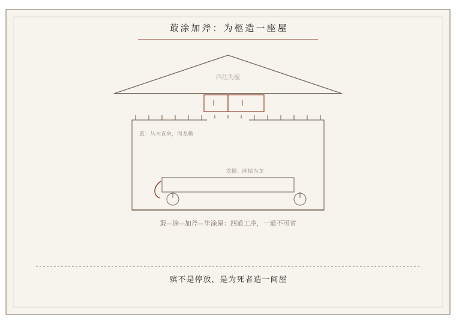

檀弓上 · 三·一百一十四 · 第 317 课
天子之殡也，菆涂龙輴以椁，加斧于椁上，毕涂屋。天子之礼也。
说什么事：天子之殡，以丛木围住画龙的輴车，像椁一般，四面涂之；棺衣绣斧文，从椁上口入而覆棺；再四注为屋，上面下覆，四面尽涂。
落在哪一层：以「围、覆、涂、屋」四道工序量殡。论「殡不是停放，是为死者造一间屋」。
为何编在此位：三百一十五课论棺之厚，此课论棺之外那一圈——从棺到椁，从椁到屋，一层层往外造。
【经】天子之殯也，菆塗龍輴以椁，加斧於椁上，畢塗屋。
【注】菆木以周龍輴，如椁而塗之。天子殯以輴車，畫轅為龍。／斧謂之黼，白黑文也。以剌繡於縿幕，加椁以覆棺，已乃屋其上，盡塗之。
【经】天子之禮也。
【疏】此一节论菆涂为古天子殡法也。菆，丛也，谓用木菆棺而四面涂之，故云「菆涂」也。「龙輴」者，殡时輴车载柩，而画辕为龙，故云「龙輴」也。「以椁」者，亦题凑菆木，象椁之形，故云「以椁」。「加斧于椁上」者，「斧」谓绣覆棺之衣为斧文也；先菆四面为椁，使上与棺齐，而上犹开也；以棺衣从椁上入覆于棺，故云「加斧于椁上」也。「毕涂屋」者，毕，尽也；斧覆既竟，又四注为屋，覆上而下，四面尽涂之也。郑云「菆木以周龙輴」者，谓丛众木直垒，周龙輴至上乃题凑，则诸侯至上，不题凑也。
殡 停柩待葬。
菆 音攒，丛聚。菆木，聚木而围之。
涂 以泥涂之。
輴 载柩之车。音春。
龙輴 画辕为龙之輴。
椁 外棺。此云「以椁」，是象椁之形，非真椁。
斧 注「斧谓之黼，白黑文也」。绣黑白相次之纹为棺衣。
縿幕 縿，旗帜之正幅；此借言棺衣之幅。
毕 尽。
四注 四面坡顶之屋。
天子之殡：用丛木围住画龙的柩车，做成椁的样子，四面涂泥；绣着黑白斧纹的棺衣，从椁上口送入覆住棺木；然后再造一座四注之屋覆在上面，由上而下，四面尽涂。
此节是四道工序：菆、涂、加斧、屋。
先菆——丛木围輴，木与輴之上口齐，而顶上还开着。次涂——四面涂泥。次加斧——棺衣从上口入，覆住棺。次毕涂屋——四注为屋，从上面下覆，四面尽涂。
四道做完，棺不可见，屋已成型。所以天子的殡，不是把柩「放着」，是给柩「造一间屋」。造屋要四道工，一道不可省。
这就是本批所谓「尺」：殡这件事本是「等」，等着下葬；礼把它改成「做」，一米一米地做出来。
第一层 「菆」：以聚为厚 菆是丛聚之木，不是整木。三百一十五课论「题凑」，此课论「菆涂」，同一路做法：以许多小材聚成一圈，替代一根大材。
这在工程上是一种智慧，在礼上是一种态度：厚不必生于大，可以生于密。今人造屋用砖，古人有夯土、有版筑，皆此理。
第二层 「龙輴」：给死者最后一次乘 輴是载柩的车，画辕为龙。殡时柩不下车，车辕画龙，是让死者仍有「乘」。注只说「画辕为龙」四字，不及其它；疏补「殡时輴车载柩」。
礼在这里没有多说什么。一辆车，画一道龙，就是全部的尊崇。可见礼的尊崇不在多，在「有一处对」。
第三层 「加斧」的次序：先把四面围到与棺齐，顶上留口 疏说得极细：「先菆四面为椁，使上与棺齐，而上犹开也；以棺衣从椁上入覆于棺。」——这是操作的次序，不是文义的次序。
礼书常这样写：一句话里有工序。读礼不可只读其义，须读其序。序错了，义也就空了。
第四层 「毕涂屋」与「诸侯不至顶」 最后四注为屋，四面尽涂，棺至此全闭。疏引郑云：「丛众木直垒，周龙輴至上乃题凑，则诸侯至上，不题凑也。」
天子在顶上收口（题凑至顶），诸侯不到顶。等级的最后一道差，就在这个「顶上收不收口」。这是极精的一处：同是围一圈木，收口与不收口，差一等。
与今日何干 今人办丧，多在殡仪馆租一厅，三日而火化。此节所示的形已不可行，其义可借：送别一个人，要给他一个「像样的处所」，而这处所是「做」出来的，不是「租」来的。做与租之别，在有没有人为他动手。
| 左 | 右 |
|---|---|
| 菆 | 丛木 |
| 龙輴 | 画辕为龙 |
| 以椁 | 象椁之形，非真椁 |
| 涂 | 四面涂之 |
| 加斧 | 黼衣覆棺 |
| 毕涂屋 | 四注尽涂 |
| 至上乃题凑 | 天子 |
| 不至顶 | 诸侯 |
画一处殡所，视点略俯。中央一辆柩车，辕上一道龙纹（只取一道蜷曲的线，不作细鳞）；车之四周丛立短木，围成一圈，木与车顶齐，顶上一口开着。一口之中，一件绣黑白相次斧纹的衣正向下送入。再上方，一座四坡屋的骨架已立，四面已涂泥（以粗质示意）。不画人、不写文字。赭色只用在龙纹与斧纹的几道线。
